Part 1: Variational Autoencoder (VAE)
Overview
A basic fully connected autoencoder and a Variational Autoencoder (VAE) are implemented and trained on MNIST. The autoencoder is trained with MSE reconstruction loss; the VAE adds a KL divergence term that regularises the latent distribution towards a standard Gaussian. Both are evaluated across multiple latent dimensionalities (2, 8, 32) to study the effect on reconstruction quality and the ability to generate new samples by decoding random noise vectors.
Task 1: Autoencoder, Reconstruction and Latent Space Sampling
A fully connected encoder-decoder is trained with latent dimensions of 2, 8, and
32. Reconstructions are compared across these configurations, and random vectors
drawn from N(0,1) are decoded to assess sampling quality.
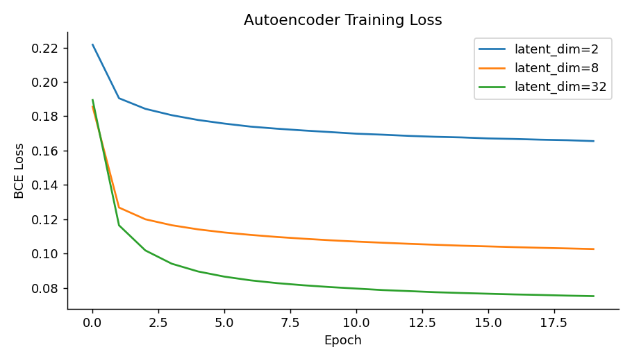
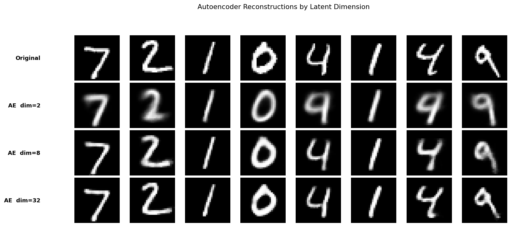
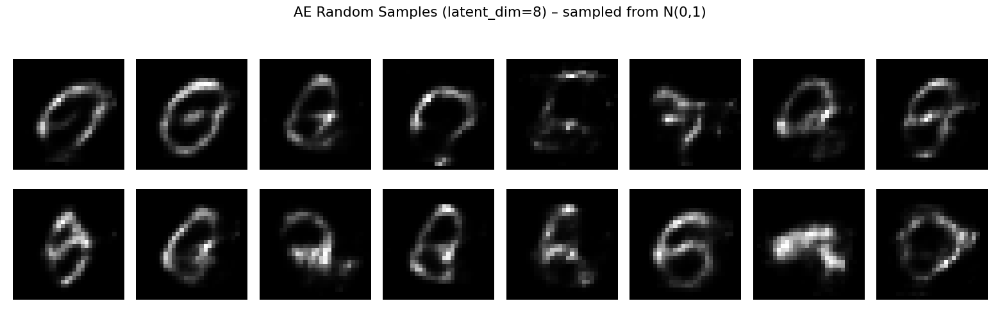
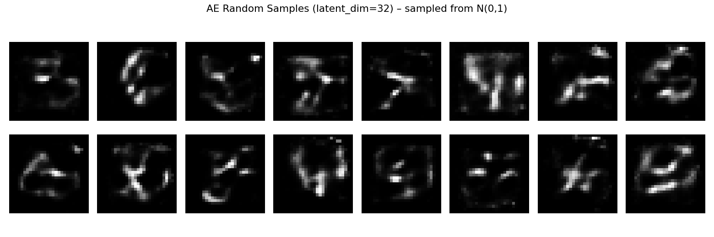
Effect of latent dimensionality on reconstruction:
As latent dimension increases from 2 to 32, reconstruction quality improves substantially. With dim=2, the bottleneck forces extreme compression: most digits are roughly recognisable, but fine detail is lost and some classes are confused (e.g., the "4" is reconstructed as a "9"). With dim=8, reconstructions are sharp and correct for all shown samples. dim=32 is nearly indistinguishable from the originals, with pixel-accurate stroke widths and clear digit identity preserved across the full sample set.
Why the autoencoder latent space is unsuitable for sampling:
Despite excellent reconstructions, drawing random vectors from
N(0,1) and decoding them produces severely distorted, artifact-laden
blobs, particularly at dim=8, where the decoded samples resemble tangled loops
and fragmented strokes rather than legible digits. At dim=32 the artifacts are
even more severe: the outputs look like crossed and overlapping stroke fragments
with no clear digit identity. This occurs because a standard autoencoder places
no constraint on the shape or density of the learned latent space. The encoder
maps training examples to clusters that may be scattered, irregularly spaced,
or separated by "gaps" containing no training signal. A random
N(0,1) vector almost certainly falls in such a gap, producing
nonsensical decoder output. This motivates the VAE, which regularises the
latent space to be continuous and centred near the origin.
Task 2: VAE, Structured Latent Space and Sampling
The VAE encoder outputs a mean μ and log-variance
log σ². A sample is drawn via the reparameterisation trick
(z = μ + σ·ε, ε ~ N(0,1)) and decoded. The loss
combines binary cross-entropy reconstruction error with a KL divergence term
that pushes the posterior towards a standard Gaussian. The 2D latent space is
visualised by decoding a uniform grid over two ranges: [-1,1]
and [-5,5].
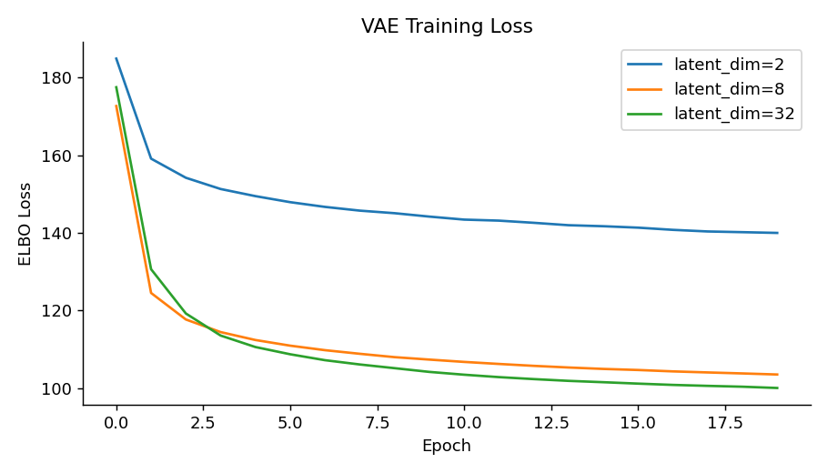
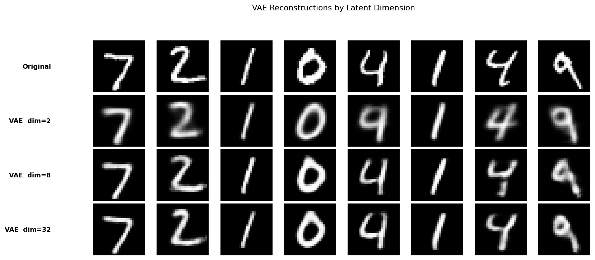
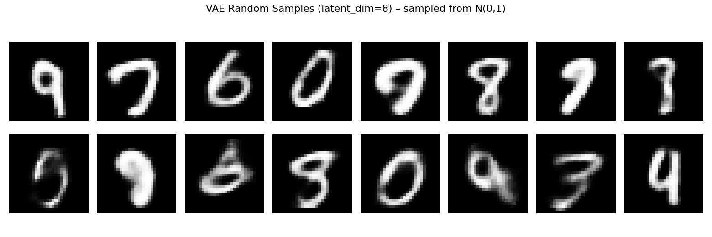
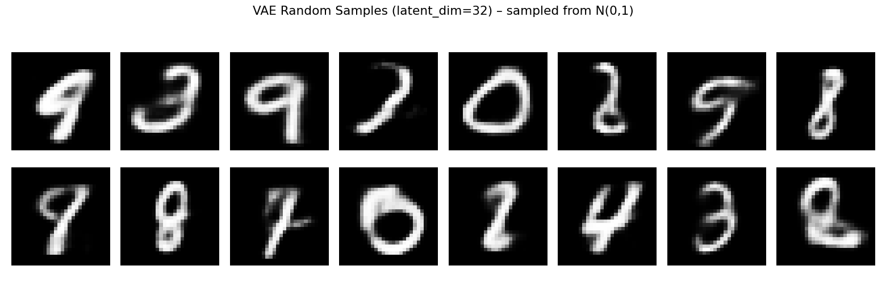
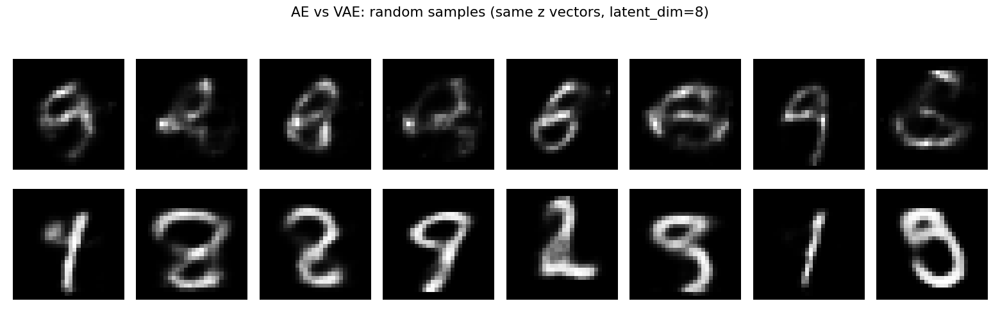
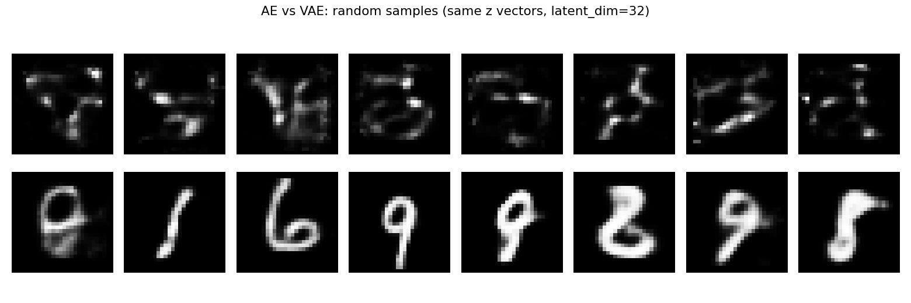
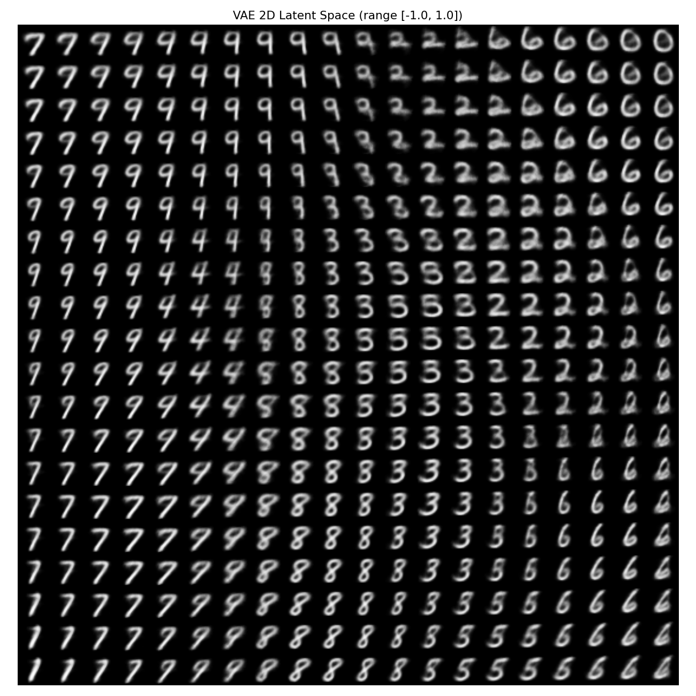
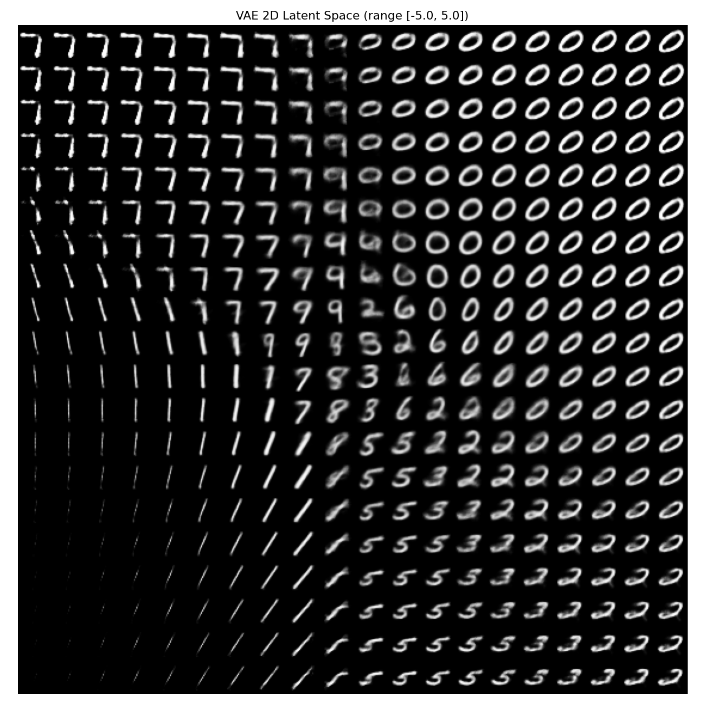
VAE vs AE: sampling comparison:
The contrast between AE and VAE samples is stark. At dim=32, the AE top row
(same N(0,1) vectors decoded through the AE) produces blurry,
crossed-stroke artifacts with no recognisable digit identity. The VAE bottom
row, using the exact same noise vectors, decodes to clean, sharp, clearly
legible digits (9, 1, 6, 9, 9, 8, 9, 8). This directly demonstrates the
core benefit of the VAE's KL regularisation: by forcing the encoder to produce
posteriors close to N(0,1), the decoder learns to map the entire
unit Gaussian ball to meaningful digit images, making random sampling reliable.
Latent space grid, range [-1.0, 1.0]:
The 2D grid traversal over [-1,1]×[-1,1] reveals a well-organised
manifold: digit classes occupy distinct regions and transition smoothly across
the space. The top-left quadrant is dominated by 7s and 9s; moving right
produces 2s and then 6s and 0s; the lower-left region contains 1s; the centre
transitions through 4s, 8s, 3s, and 5s. Every cell in the grid decodes to
a recognisable digit with no blank or artifact cells, confirming that the
unit Gaussian region is densely and continuously covered by the learned
generative model.
Latent space grid, range [-5.0, 5.0]:
Extending to [-5,5]×[-5,5] reveals that the meaningful region
is concentrated near the origin: the central portion of the grid still shows
smooth digit transitions (1s, 7s, 0s, 5s, 3s, 2s, 6s), but the extreme
corners become progressively faded, ghostly, and eventually near-blank as
the decoder is queried at points far outside the training distribution's
support. Columns and rows near ±5 decode to dim, barely visible digit
outlines rather than sharp images. This illustrates the boundary of the
prior: the KL term confines the posterior mass within a few standard
deviations of the origin, so the decoder was never trained to handle inputs
far beyond |z|≈1 to 2.
Part 2: Deep Convolutional GAN (DCGAN)
Overview
A DCGAN is implemented and trained on the Pokemon dataset (64×64 RGB images). The generator uses transposed convolutions with batch normalisation and ReLU to upsample from a 100-dimensional noise vector to a 64×64 RGB image. The discriminator mirrors this with strided convolutions, batch normalisation, and Leaky ReLU activations, outputting a single real/fake probability via sigmoid. Training uses the standard minimax adversarial objective with binary cross-entropy loss.
Task 1: DCGAN Training with Leaky ReLU Discriminator
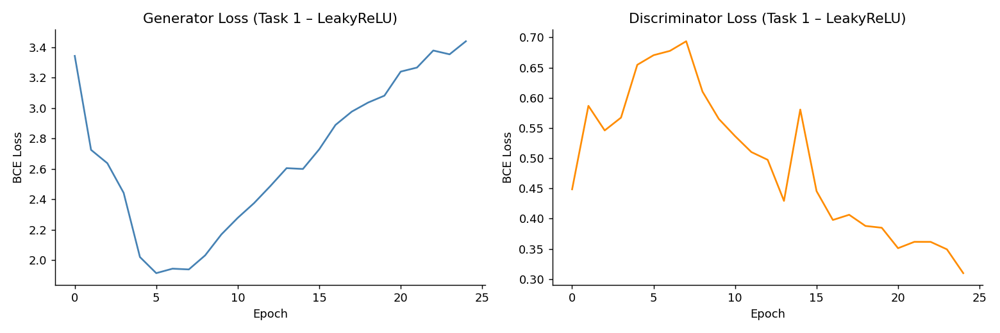
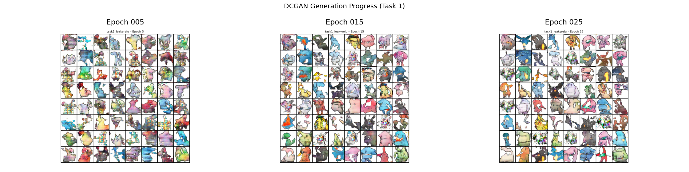
Loss curve dynamics:
The generator loss begins at approximately 3.35 and falls sharply to a minimum near 2.0 around epoch 5, corresponding to the phase when the discriminator is still learning to distinguish real from fake and provides strong gradient signal to the generator. After epoch 5, the generator loss rises steadily to around 3.4 by epoch 25. This rising trend indicates the discriminator is becoming more accurate over time, making it harder for the generator to fool it, a healthy adversarial dynamic rather than mode collapse.
The discriminator loss starts near 0.45 and initially rises to a peak of approximately 0.68 around epoch 7 as the generator improves, then steadily decreases to about 0.31 by epoch 25. The discriminator's declining loss in later epochs reflects it becoming increasingly confident at distinguishing real Pokemon from generated ones, consistent with the generator loss rising concurrently.
Image quality progression:
Generated images show recognisable Pokemon-like structure even by epoch 5: distinct creature outlines, varied colour palettes, and consistent 64×64 framing are visible. By epoch 15 the diversity increases and backgrounds become cleaner. Epoch 25 outputs show a wide variety of Pokemon body types and colours with generally well-defined silhouettes, though fine details like faces and limbs remain somewhat blurred, which is typical for 25 epochs of DCGAN training at this resolution.
Task 2: Leaky ReLU vs Standard ReLU Discriminator
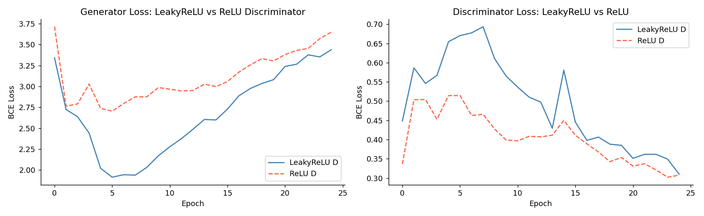
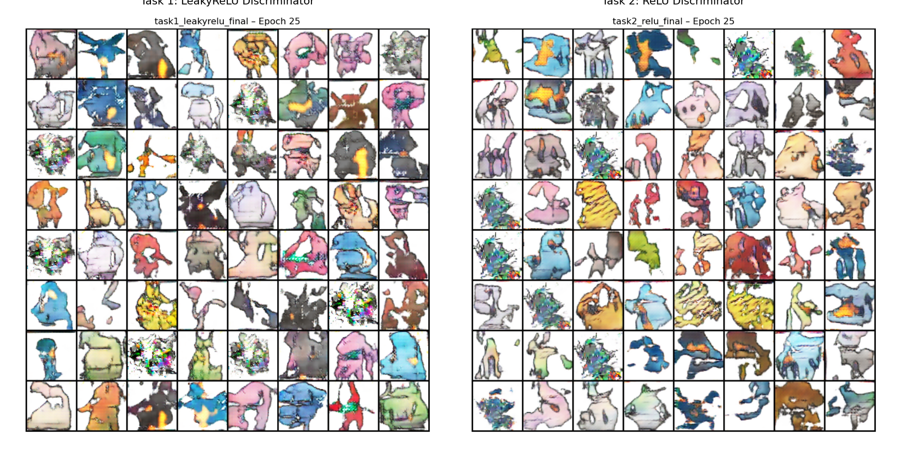
Leaky ReLU vs standard ReLU: training stability:
Replacing Leaky ReLU with standard ReLU in the discriminator produces a notably different loss trajectory. The ReLU discriminator loss (dashed orange) starts lower and drops more aggressively, reaching approximately 0.30 by epoch 25, a faster convergence than the Leaky ReLU discriminator (solid blue). The ReLU generator loss (dashed) stays elevated in the range 2.75 to 3.65 throughout training without the dip seen with Leaky ReLU, which is evidence that the generator is struggling to learn effectively against the ReLU discriminator. The Leaky ReLU variant shows a more typical adversarial dynamic with the generator loss dipping as it learns, then rising as the discriminator improves, while the ReLU variant's loss curves suggest a more unstable training process where the generator receives weaker gradient signal.
Standard ReLU clips all negative pre-activations to zero, which can cause "dying" neurons in the discriminator, with entire feature maps that become permanently inactive. This is the mechanism Leaky ReLU was designed to fix. In practice on this dataset and training length, both variants produce Pokemon images of comparable visual quality at epoch 25, though it is notable that there are more instances of "broken" pokemon that look almost identical. The ReLU variant's faster discriminator convergence could become problematic in longer runs, where an overpowering discriminator would starve the generator of gradient signal and potentially cause mode collapse. Leaky ReLU offers a more balanced training dynamic that is typically preferable for longer training regimes.
Part 3: Wasserstein GAN (WGAN)
Overview
A WGAN is implemented following Arjovsky et al. (2017). Key differences from
a standard GAN: (1) the discriminator is replaced by an unbounded
critic with no sigmoid output; (2) the loss is the Wasserstein-1
distance estimate (E[C(real)] − E[C(fake)]), not binary
cross-entropy; (3) RMSprop replaces Adam; (4) the critic is updated
n_critic times per generator step; and (5) critic weights are
clipped to [−clip, clip] after each update to enforce the
Lipschitz constraint. Task 1 uses the FC architecture on MNIST; Task 2
extends to convolutional architectures for Pokemon.
Note on computational constraints: Due to limited GPU resources, relatively small generator and critic architectures were used across both tasks to keep training times practical. This directly limits output quality, particularly for the Pokemon task where larger convolutional capacity would be needed to capture the dataset's colour and structural diversity. For the same reason, hyperparameter optimisation was conducted on MNIST rather than Pokemon.
Task 1: FC WGAN, MNIST Digit Generation
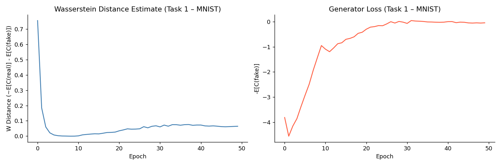
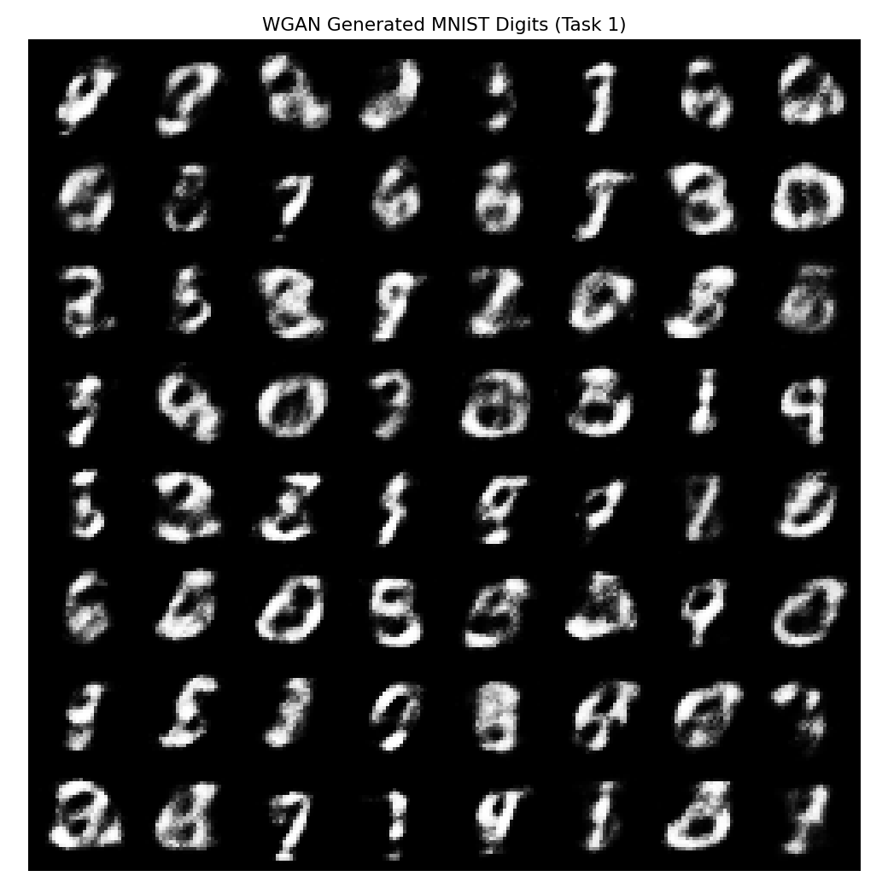
Training dynamics:
The Wasserstein distance estimate (left panel) starts at approximately 0.75 and drops rapidly within the first 3 to 5 epochs to near zero, then stabilises in a narrow band around 0.05 to 0.08 for the remaining 45 epochs. This convergent, non-oscillatory behaviour is the key stability advantage of the Wasserstein loss: unlike the BCE losses of a standard GAN, the W-distance provides a meaningful, monotonically interpretable training signal; a lower value indicates the critic cannot distinguish real from fake, meaning the generator has learned the true data distribution well.
The generator loss (right panel, −E[C(fake)]) begins highly
negative (around −4.5) as the critic assigns low scores to the generator's
early random outputs, then rises steadily toward 0 as the generator learns
to produce images the critic scores similarly to real data. By epoch 25 the
generator loss has nearly reached 0 and plateaus, indicating a stable
equilibrium between generator and critic, a much cleaner convergence curve
than the oscillating BCE losses seen in DCGAN training.
Generated sample quality:
The 64 generated MNIST digits show substantial diversity: all ten digit classes (0 to 9) are represented across the sample grid with varied writing styles and stroke widths. Images are somewhat softer than real MNIST digits (a consequence of the FC architecture and moderate training length), but digit identities are clearly legible in the large majority of samples with no evidence of mode collapse onto a single digit class.
Task 2: Convolutional WGAN, Pokemon Generation
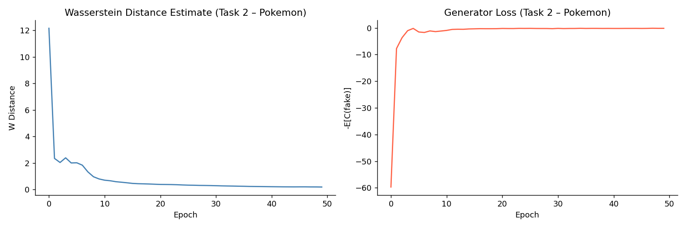
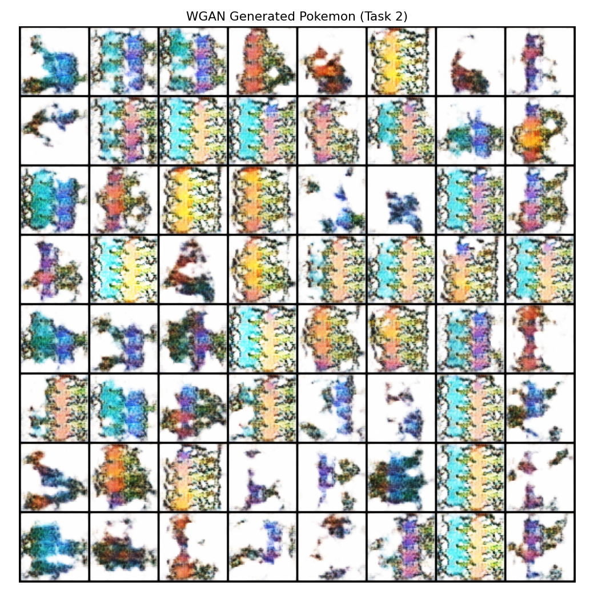
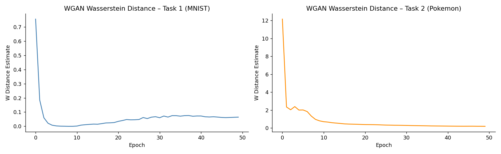
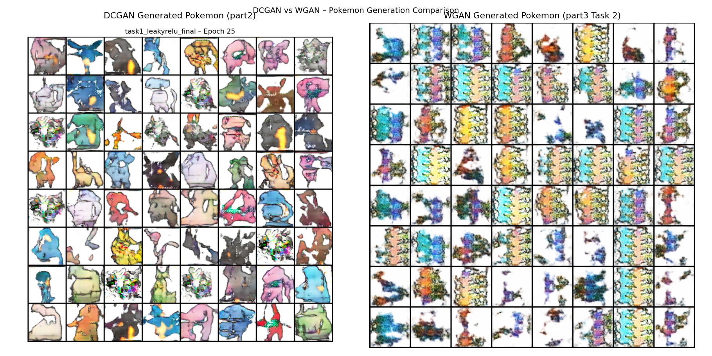
Generated image quality and training stability:
The WGAN converges stably on the Pokemon dataset, with the Wasserstein distance estimate declining and flattening over 50 epochs without the oscillation or spikes characteristic of BCE-based GAN training.
WGAN vs DCGAN: differences in behaviour and output:
Comparing the final epoch outputs side-by-side, the DCGAN (left) produces Pokemon with somewhat sharper edges and more clearly delineated individual creature bodies, with distinct silhouettes with recognisable anatomical features are more common. The WGAN outputs (right) tended to be of worse quality, with more blurred edges and more frequent instances of merged or "blob-like" creatures, or strange repeated artifacts.
In terms of training behaviour, the WGAN is notably more stable. The DCGAN's adversarial BCE loss is prone to instability when the discriminator becomes too strong (vanishing gradients to the generator) or too weak (generator receives little signal). The WGAN's critic, operating under weight clipping to enforce the Lipschitz constraint, provides a gradient signal that remains informative even when the distributions are far apart, which is why the Wasserstein loss was proposed. The trade-off is that weight clipping is a crude Lipschitz enforcement mechanism that can limit the critic's expressiveness, contributing to the slightly softer visual quality relative to DCGAN at the same epoch count. It is also worth noting that the WGAN was trained for fewer epochs with a smaller architecture than the DCGAN due to compute constraints, so the visual gap is not a fair apples-to-apples comparison of the two approaches; a larger model trained longer would be expected to close much of the quality difference.
Hyperparameter Optimisation: 4 Random Configurations × 10 Epochs
A random hyperparameter search over four WGAN training parameters is conducted
on MNIST: learning rate lr ∈ {1e-5, 5e-5, 1e-4, 2e-4},
critic steps per generator update n_critic ∈ {3, 5, 7, 10},
weight-clip range clip ∈ {0.005, 0.01, 0.02, 0.05}, and
batch size ∈ {32, 64, 128, 256}.
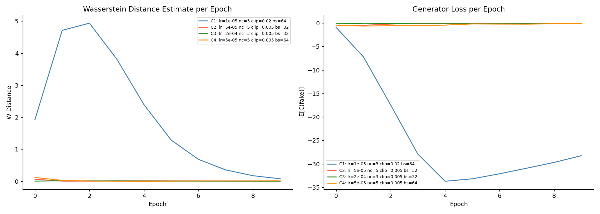
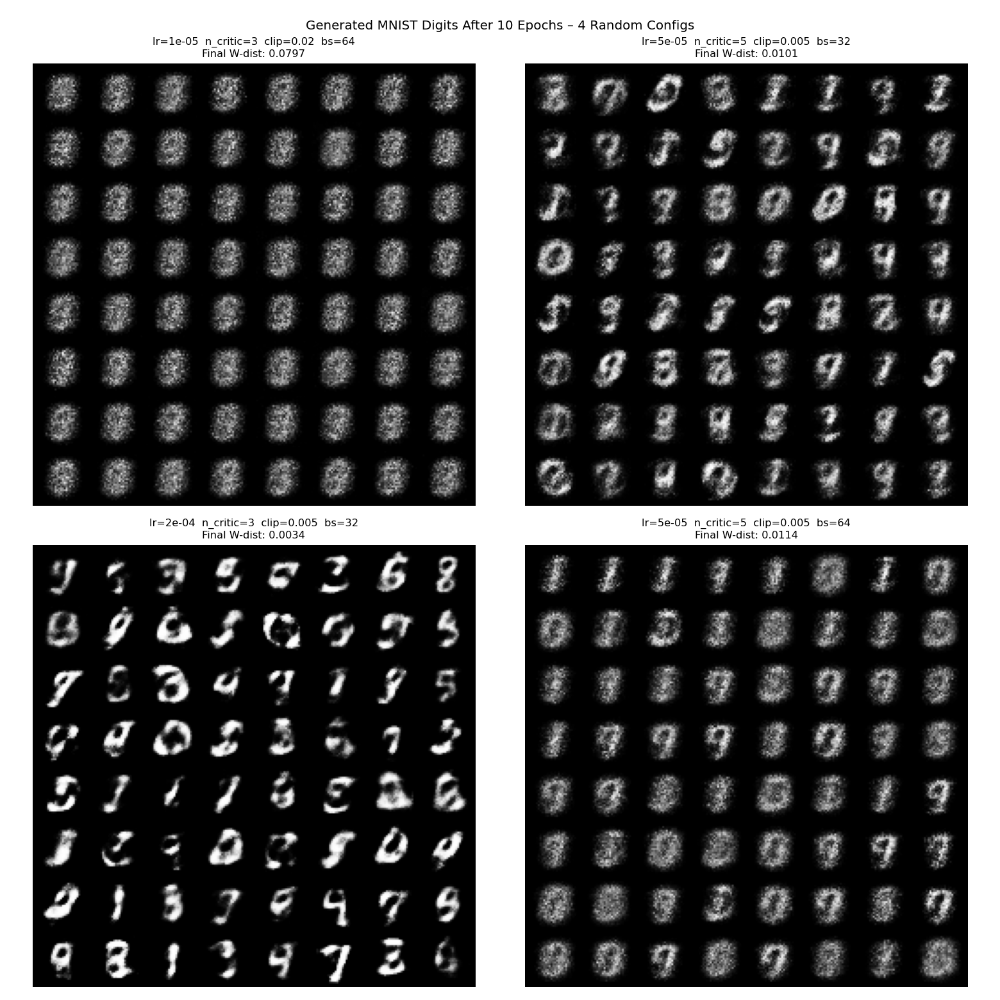
| Config | lr | n_critic | clip | batch_size | Final W-dist | Notes |
|---|---|---|---|---|---|---|
| C1 | 1e-05 | 3 | 0.02 | 64 | 0.0797 → diverges (peaks ~5.0) | Unstable; clip too large for lr |
| C2 | 5e-05 | 5 | 0.005 | 32 | 0.0101 | Stable; decent digit quality |
| C3 (best) | 2e-04 | 3 | 0.005 | 32 | 0.0034 | Sharpest digits; lowest W-dist |
| C4 | 5e-05 | 5 | 0.005 | 64 | 0.0114 | Stable; similar to C2 |
Key findings from the hyperparameter search:
-
Config C1 (
lr=1e-5, clip=0.02) is the outlier: its Wasserstein distance rises from ~2 to a peak of ~5 over the first 3 epochs before collapsing. The large clip value (0.02) combined with the very low learning rate means the critic's weight magnitude is not constrained tightly enough relative to its learning speed, causing the critic to diverge and drag the generator into an extremely negative loss region (G-loss reaches ~−34). The sample grid for C1 shows blurry, noisy, barely-recognisable digit blobs. -
Configs C2, C3, C4 all converge stably to very low
W-distances within a few epochs. Their G-loss curves are nearly flat
near 0 throughout, indicating rapid equilibrium. Among these, C3
(
lr=2e-4, n_critic=3, clip=0.005, bs=32) achieves the lowest final W-distance (0.0034) and produces the sharpest, most legible generated digits, as the smaller batch size and higher learning rate accelerate early convergence, while the tight clip (0.005) keeps the critic's Lipschitz constant well-controlled. -
The dominant hyperparameter interaction is between
lrandclip: a large clip allows larger critic weight magnitudes, which requires a correspondingly higher learning rate to avoid the critic dominating and destabilising training. Tight clip values (0.005) are safer across a wider range of learning rates.